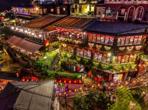
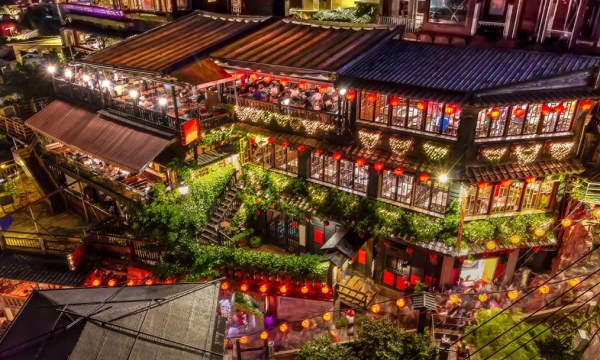
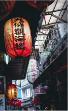
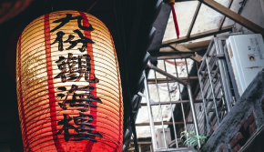
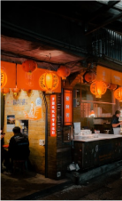

九份


細い路地の階段に沿って建つ古い館に、提灯が灯るノスタルジックな風景。1989年、映画「非情城市」の 舞台になったことをきっかけに再び注目を集めると共に、日本では、九份の町中にある建物が2001年公開の映画 「千と千尋の神隠し」に登場する湯婆婆の湯屋を彷彿させるとして話題に。日本統治時代に建てられた古い建物が残ることから、 どこか懐かしい雰囲気が漂う町並みは日本人の琴線に触れ、今や台湾で行きたい観光地ナンバーワンとなりました。




おすすめ観光時間は幻想的な夕暮れがねらい目
15:00～19:00